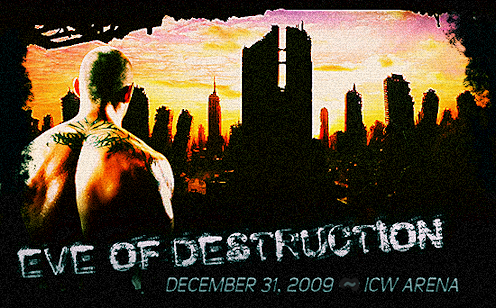

Results for Eve of Destruction
December 31, 2009
ICW Arena, Philadelphia, PA
We open backstage in the dressing room area of ICW superstar Marie Annabelle Jones. The cocky second generation superstar is finishing putting her wrestling gear on when a knocking is heard at her dressing room door. She rolls her eyes, for she is a bit frustrated that someone is bothering her at this time.
Annabelle: Come in……
The door opens and in walks Angelica Jones, Annabelle’s mother. Annabelle frowns upon seeing this visitor but she does acknowledge her presence.
Annabelle: Hi mom. What can I do for you?
Angel: Nothing at all. I just wanted to stop by to wish my little girl luck tonight.
Annabelle rolls her eyes.
Annabelle: I’m not your little girl anymore, mother. I am a second generation prodigy. You’re lucky there are no cameras or annoying reporters around. I don’t want anyone catching you calling me your “little girl.” That would completely ruin the image I have fought so hard to build up for myself.
A sly, knowing grin creeps across Angelica’s face.
Angel: An image of a cocky, young rookie who doesn’t know what’s good for her?
Annabelle sighs. With anyone else she would’ve lashed out but this is her mother and she holds some respect.
Annabelle: No….the most talented prodigy in this company, a second generation star, the future of ICW, and most importantly, the next Shock Champion.
Angel: That’s assuming you win this tournament.
That was the last straw. Annabelle stands up. Her frustrations are visible now.
Annabelle: What’s with all the negativity, mother? Do you not have faith in me?
Angel: Oh I have faith in you. I know what you can do. I helped train you, your aunt Kayla helped train you, Blayze helped train you. The three of us have eleven world titles between us….and this isn’t considering your time at the House of Paine. You have had top quality training from the best in the world.
Annabelle: Right, you’re pointing out the obvious, so getting back to my question…..what’s with the negativity?
Angel: I’ve been watching you, sweetie, and you have me worried.
Annabelle sighs, her frustration showing already, but now with a touch of sarcasm.
Annabelle: Wonderful. I didn’t know you had time to follow your “little girl,” what with your duties as President of the Livewire Brand in Motor City Wrestling.
Angelica nods, acknowledging her recent career move.
Angel: Yes, my new position in the business has been keeping me busy, but nothing will keep me away from my daughters. You are the single most important thing to me, Annabelle. I would do anything for you, sacrifice everything, including my soul, for you.
Angelica laughs.
Angel: Hell, I have sacrificed my own soul for you before…..in a way.
Annabelle: Stop it, mom.
Angelica looks on quizzically.
Angel: Stop what?
Annabelle: Stop trying to make me feel guilty. It isn’t going to work. I am leading my own life now and I don’t need you to direct me or guide me. I am my own person and tonight I am going to win the Shock Championship on my own and on my own I will add to the Jones dynasty.
Angelica feels a tinge of pain in her heart after hearing this. Annabelle notices this and even through her smug arrogance she still feels a little guilty.
Angel: I’m sorry…..I just wanted to come back here and let you know that I was going to be watching you tonight, cheering you on. I’ll go.
Angelica turns to walk off but Annabelle stops her.
Annabelle: Wait……
Angelica stops and turns back to face her oldest daughter.
Annabelle: Don’t get me wrong. I love you. I always will. You have done a lot for me and I am appreciate of it. And if all you’re here for is to provide moral support…..then thank you. I’m just saying, don’t try to give me advice, don’t try to tell me what to do, do not help me in any way. I will win tonight and I will win on my own.
Angel: Of course you will. I wouldn’t have it any other way.
Mother and daughter embrace.
Angel: Go get ‘em, kiddo.
*****
The red and white pyro explodes as the opening music plays. We scan across the arena packed with cheering fans with signs such as "Annabelle Jones Future Champion," "Kyle Sanders All American Reject," "John Patrick is my Idol," and "The Case Sisters’ #1 Fan".
Summer: Welcome, everyone, to ICW’s inaugural pay per view spectacular, Eve of Destruction! I'm Summer Breeze and alongside me is my broadcast partner, Johnny Sorrow. What a show we have in store for you tonight.
Johnny: That we do, Summer! Tonight, the ICW Shock Championship will be decided in a one-night single elimination tournament. People did not pay to hear us talk, though. They want action! So let's send it down to our announcer, Jimmy Landell, Jr., for our opening match.
*****
Jimmy Landell, Jr.: Ladies and gentlemen, this is the opening match in the first round of the Shock title tournament and is set for one fall. Introducing first, from Boston, Massachusetts standing five feet, seven inches and weighing 130 lbs, Marie “Annabelle” Jones!!!
“Just Close Your Eyes” by Waterproof Blonde begins to play over the loudspeakers of the arena. The tron flashes to life and we see scenes of Marie “Annabelle” Jones in action against various opponents. The words “The Next Generation” appear on the tron. Then a spotlight shines on the stage and Annabelle, dressed in her wrestling gear that consists of black pants, a black top and black boots, emerges with an ear-to-ear grin on her face. Her long, red hair hangs down to shoulder length. Based on the confident stride with which the young lady makes her way to the ring, it is obvious that she is ready for action. Annabelle steps up onto the ring and onto the apron. She steps inside the ring and waits patiently for the match to get started.)
Jimmy Landell, Jr.: And her opponent from The Church standing six feet, six inches and weighing 280 lbs., Syn!!!
The lights in the arena go out. “Fear is Big Business” by Ministry starts to play. Fog starts to roll up from the entrance ramp as a single light shines from behind curtains, silhouetting a massive figure.
A second, smaller figure walks out past the first as a spotlight hits the ramp. Syn’s manager, Angel, stands on the ramp looking out to the fans. She then summons Syn to her side as she walks down the ramp.
Once at the ring, Angel circles around to the steps as Syn slides in under the ropes. With both in the center of the ring, Angel removes his mask to show the painted, grimacing face of Syn.
Angel instructs Syn before she exits the ring.
Annabelle and Syn meet in the middle of the ring and Syn is quick to grab Jones’ arm, twisting it fiercely as Jones struggles to get free. Syn pours on the pressure until Jones is able to free herself with a series of flips. She then takes Syn by the arm and whips him into the ropes, taking him down to the mat with a clothesline on the rebound. Syn is flat on his back on the mat. Jones leaps up and lands a big leg drop on her fallen foe.
Summer: Annabelle is quick to take advantage of the much larger Syn once she has him off his feet.
Johnny: She needs eyes in the back of her head. Annabelle is fighting on two fronts with Angel standing outside of the ring.
Summer: You think Angel will inject herself into the match?
Johnny: I wouldn’t put it past her.
After Jones pulls Syn to his feet, Syn lays a series of blows to the gut of Jones who bends over, gasping for air as Syn hits the ropes. Bouncing back, he locks in a side headlock on Jones and drops her down on her face. Syn pulls Jones to her feet, applying a front face lock on her. Syn falls straight down and drives Jones's head into the mat. Rolling her over, he makes the cover hooking the leg.
1.
2. No, kick out by Jones! Outside the ring, Angel is screaming at Syn for failing to get the job done.
Summer: For a large monster of a man, Syn is showing good wrestling knowledge.
Johnny: No, doubt Angel has her man prepared, but Annabelle is no slouch herself.
Syn pulls Jones to her feet. Standing behind Jones, he places his head so it's under one of Jones's arms. He lifts Jones up so she is on his shoulder. Syn falls backwards, dropping Jones to the mat on her back. Syn mounts Jones from behind, as she is face down on the mat. He sits on Jones's back and puts Jones's arms on his legs. Syn then links his hands under Jones's chin and pulls back as Jones screams in pain.
Johnny: Annabelle is trouble here. There is no way she can get out of that hold. Syn is just too strong.
Summer: She does appear to be in a bad way, but she has her mother’s fighting spirit. I really doubt she will throw in the towel so easily.
Syn pours on the pressure as Jones struggles to drag herself to the ropes; her fingers outstretched reaching for them. Referee Don Davidson asks if she submits, to which Jones screams, "No!" and tries to reach the ropes. Syn drags Jones back to the center of the ring. Jones screams in pain as her back is stretched. She struggles once more to reach the ropes. Finally, her outstretched fingers wrap around the bottom rope, at which time the referee forces Syn to break the hold.
Summer: Good call by the referee.
Johnny: The determination of Annabelle Jones is nothing short of amazing.
Summer: Angel does not think much of Annabelle’s determination. Anger is eminent in her words as she screams at Syn.
Syn grabs Jones by the arm, locking in a wristlock. Syn steps forward and drives Jones's arm across his knee. He then applies a side headlock on Jones and drops her down face first to the mat with a bulldog. Syn drops down, hitting an elbow drop to the chest of Jones. He pulls Jones to her feet and rakes her eyes before hitting the Swinging DDT. He falls over Jones and makes the cover.
1.
2.
3. No, Jones kicks out!
Johnny: I’m not sure. I thought Syn had her there.
Summer: Referee Don Davidson thinks different.
Johnny: Touché!
Syn pulls Jones to her feet and whips her into the ropes. On the rebound, Jones ducks under a clothesline attempt. Hitting the far ropes, she rebounds and nails Syn with a Flying Lariat. Syn is to his feet and Jones quickly takes him down with a Clothesline and heads to the top rope where she flies off, hitting an elbow to the heart of Syn. Jones covers him for the pin as Don Davidson makes the count.
1.
2. No, Syn kicks out!
Summer: Only a two count!
Johnny: A more experienced wrestler would tell you that it will take more then that to keep Syn pinned to the mat.
Summer: You mean like Angelica “Firestar” Jones?
Johnny: Exactly!
Summer: Don’t let Annabelle hear you say that.
Jones nails Syn with a series of rights to the gut. As Syn is reeling, Jones nails a Twist of Fate, taking him to the mat. She rolls him over to make the cover.
1.
2.
3. No, Syn gets the shoulder up!
Summer: Syn is a true monster. Nothing Annabelle does seems to faze him.
Johnny: Maybe so, but Angel still does not look happy with Syn.
Jones pulls Syn to his feet and whips him into the corner turnbuckle. She rushes in. Leaping on the second rope, she begins to lay into Syn with a series of blows as the crowd counts along with the referee.
1.
2.
3.
4.
5.
6.
7.
8.
9.
10.
Jones hops down, letting Syn fall forward on the mat. Jones rolls him over making the cover.
1.
2.
3. No! Syn is close to the ropes and has his foot on the bottom rope.
Summer: So close yet so far.
Syn is to his feet and Jones charges with a spear, which Syn sidesteps and Jones goes through the top rope to the floor. Syn follows her to the floor and the two wrestlers begin to trade punches. Syn grips Jones by the arm and whips her into the steel ring steps. Syn pulls Jones up and holds her as Angel slaps her across the face just as Don Davidson begins the count.
1.
2.
3.
4.
5.
Syn slides back into the ring.
6.
7.
8.
9.
Jones rolls back into the ring and before she has the chance to regain her footing, Syn begins to stomp away on her.
Johnny: Now that’s what I like to see, a drive to win. I tell you Syn is going places in ICW.
Jones goes for a submission, grabbing Syn by the lower leg and locking in an ankle lock. Syn screams out in pain, shaking his head and screaming, "No!" as referee Don Davidson asks if he submits.
Summer: Jones has Syn in a bad way. Angel is not enjoying this.
Johnny: You think her red face and screaming at Syn gave it away?
Syn struggles to reach the ropes, but Jones pulls him back to the middle of the ring. Syn is finally able to roll his body over and kick out of the ankle lock. Once more, both wrestlers have reached their feet. Syn ducks under a clothesline attempt. Before she can react, Jones finds herself the victim of a Backcracker. As she hits the mat, Syn makes the cover.
1.
2.
3. No, Jones kicks out!
Summer: Annabelle dug down deep and kicked out just before the referee’s hand hit the mat for three.
Johnny: She is looking to get out of the shadow of her mother and winning the Shock title would be a step in the right direction.
Summer: Angel and Syn have other plans for her.
Johnny: Of course, they want to save her soul, even if they have to beat the sin out of her to do so.
Syn once more pulls Jones to her feet and rakes her eyes. Pulling back on her hair, he sends her to the mat and makes the cover.
1.
2. No, Jones gets the shoulder up!
Syn shoves her down again and covers Jones, hooking the leg.
1.
2. No, Jones kicks out again!
Outside the ring, Angel is clearly frustrated and shows three fingers to referee Don Davidson, claiming he is counting too slowly.
Summer: Angel is beginning to lose patience with Don Davidson’s officiating.
Johnny: That young lady needs to practice what she preaches. After all, patience is a virtue.
Syn goes to pull Jones to her feet. With the referee distracted, she hits Syn between the legs, causing the monster to double over in pain. Jones follows up with The Vindicator (MVP's Playmaker). Hooking the leg, she makes the cover.
1.
2.
3.
Jimmy Landell, Jr.: Ladies and gentlemen, here is your winner, Marie “Annabelle” Jones!!!
Summer: An impressive victory for Annabelle Jones! She is quickly moving out of her mother’s shadow.
Johnny: Indeed she is.
*****
[He's been watching the action all night long, his ice-blue eyes poring over every move of every wrestler that he's seen thus far. The ICW Shock Championship tournament has seen some of ICW's stars pour their hearts out in the ring. He could have participated in the festivities himself, had he chosen to do so. He has never been one to just jump on a bandwagon simply because it's there. After all, you need to pick your spot and make sure that everyone remembers your name. When the time comes, The Agent of Vengeance will make it obvious that he's here for one thing and one thing only: taking anyone he sees fit to the woodshed.
Vindicator is dressed in black from head to toe: black turtle neck that seems to be straining to contain the bulk of his upper body; a pair of black denim jeans tucked into a pair of black, steel-toed work boots. He scratches his chin, a slight sound reminiscent of sandpaper rubbed against wood audible thanks to the salt-and-pepper growth residing there. His right foot is shaking restlessly on his left knee as he sits back in one of the luxurious skybox seats at ICW Arena. Sitting to his right, intently waiting on the next match to begin with a proud grin on his face is ICW co-owner, LJ Black.]
Black: I'm rather proud of the talent we have competing in this tournament tonight. I am curious, however, as to why you chose to sit out of tonight's tournament? A man of your obvious skills could easily have won this tournament.
[Vindicator doesn't bother looking in Black's direction. His voice sounds like he swallowed a plate full of razors then chased it with rubbing alcohol.]
Vinnie: You don't go into war without knowing who it is you're up against... What you're dealin' with. [He cuts his eyes to the left, keeping LJ in his peripheral vision.] I spent years bustin' motherfuckers up, takin' titles from whoever I wanted, whenever I wanted. They tried to make me out to be one of the good guys... I ain't a good guy. I ain't a nice guy. I'm a dick, LJ. And I ain't apologizin' to a single, solitary motherfucker for it.
Black: [With a slight smile.] I respect your attitude. So tell me; just what is it the Vindicator hopes to accomplish here in ICW?
Vinnie: Lemme tell ya somethin', LJ. [He drapes his left arm over the back of his seat, turning his head to look LJ straight in the eyes.] When y'all offered me that contract, I wondered what the hell was wrong with the competition here. I made a killin' in this business... I ain't wantin' fo' a goddamn thing when it comes to money. I don't need any championships. I ain't lookin' to be a puppet. I signed that contract 'cuz it gives me a chance to stomp the shit outta anybody that catches my attention. I joined ICW 'cuz I got the itch again and it's time I scratched it all up and down yo' roster.
Black: I have no doubt a man of your reputation will do just that. Tell though why ICW? Why did you pass up the chance to reunite with Steve Pinex in the MWA?
[Vindicator smirks with a "Humph!" For a long moment, he just glares at LJ with malice in his eyes, almost as if he were thinking of ripping LJ's head clean off for daring to utter that name.]
Vinnie: If I wanted to go back and be at the mercy of an asshole that thinks they can tell you how to live your life, I'd be at home with my momma right now. I ain't feelin' like bein' in ANYBODY'S fuckin' shadow. I had enough of that shit when I ran with him and his crew. I'm here 'cuz it ain't got the taint of Pinex on it. I ain't gotta hear anybody's bullshit when it comes to why I turned my back on 'im and why I'm doin' my own fuckin' thing. [He redirects his attention to the ring, where it seems that preparations for the next match are about to begin.] Now, I've got a question of my own to ask you... How much damage are you payin' me to do to these motherfuckers before it's all said and done?
[Vindicator sits back in his seat, his hands laced together and resting in his lap, his right leg having been replaced on its perch on his left knee. LJ Black looks at him with a thoughtful expression on his own face as the scene fades to black.]
*****
Jimmy Landell, Jr.: Ladies and gentlemen... The following contest is scheduled for one fall! Introducing first...
["Imma Bee” by the Black Eyed Peas comes floods the arena as Leslie Case-Inman walks out onto the stage.]
Jimmy Landell, Jr.: Hailing from Peoria, Illinois... LESLIE CASE-INMAN!!
[ She soaks in the roar of the crowd for a moment before heading down the ramp, greeting the fans as she goes. She steps up onto the apron and climbs between the ropes. She stretches her arms and her neck, readying herself for the arrival of John Patrick.]
Jimmy Landell, Jr.: And her opponent...
[The guitar opens up with “Burn it to the Ground.” When Chad Kroeger starts to sing, John Patrick walks out onto the stage. He stands there for a minute as five pyro blasts in gold go off on each side of him.]
Jimmy Landell, Jr.: From Wichita, Kansas weighing in at 240 pounds. "THE LEGEND BY DESIGN," JOHN PATRICK!!
[Patrick then walks down the ramp and rolls under the bottom rope into the ring. He hits all four turnbuckles for poses.]
Summer: I’ve been highly anticipating this match.
Johnny: Should be a great technical match between the wily veteran, John Patrick, and the newcomer, Leslie Case-Inman.
[Referee Don Davidson gives Patrick and Case-Inman final instructions before signaling for the bell. Once he does so, JP and Leslie circle the ring for a moment before coming together in the center in a collar and elbow. Leslie tries valiantly, but JP's strength advantage is too much, as he shoves her off, sending her crashing to the mat.]
Summer: That may not have been the wisest of move on Leslie’s behalf. John obviously has her outclassed in the strength department.
Johnny: Leslie would do well to stick to a mat game and make use of her extensive knowledge of submission maneuvers.
[Leslie slowly gets to her feet, a concerned expression on her face as she backs away, never taking her eyes off JP.]
Summer: Leslie seems a little cautious in locking up with John once more.
Johnny: As well she should be.
[Leslie approaches JP once again. After another lock up of collar and elbow between the two wrestlers, JP converts into an overhand wristlock. JP applies the pressure, forcing Leslie to start bridging backward, slightly. JP takes his right foot, lifts then quickly places the heel against the back of Leslie's right knee, forcing it to buckle. When it does, he adds more pressure to the wristlock, then pours it on, forcing her into a bride on the mat. Leslie struggles to find a way to extricate herself, maintaining the bridge to avoid being placed in a pinning predicament.]
Summer: This is where the strength and experience of John Patrick comes in.
[Leslie quickly drops down onto her back, placing her feet squarely on JP's stomach before kicking hard, flipping him over and off her, breaking free of the wristlock. She quickly scrambles to her feet as JP turns over, a shocked expression on his face momentarily before it's replaced by a nod and a smirk.]
Summer: I think John is realizing that this will not be as easy as he first thought.
Johnny: John Patrick is a veteran. He never underestimates his opponents. The man is just confident in his own skills.
[JP and Leslie circle the ring once more before lunging toward each other in the center of the ring. This time, Leslie ducks beneath JP then quickly spins around. Just as JP follows suit, Leslie catches him with a textbook dropkick that staggers him. Quick as a cat, she's back on her feet and in the air for a second dropkick that sends JP back into the ropes. Leslie attempts an Irish Whip, but JP counters into a whip of his own that sends her across the ring. JP lowers his head, looking for a back body drop, but Leslie stops in her tracks, kicking him and connecting with his left shoulder. As he staggers from the blow, Leslie catches him with a standing dropkick that knocks him down to the mat. Instinctively, JP rolls to the side, completely out of the ring in order to get separation and break Leslie's momentum.]
Summer: Excellent move by John by rolling out of the ring! He has taken the momentum away from the much lighter and agile Leslie Case–Inman.
[Leslie is wary of the veteran, giving him more than enough room to re-enter the ring. He walks up the ring steps slowly, trying to get into her head. Once on the apron, he takes his time getting back in the ring, slowly making his way through the ropes, an annoyed grimace on his face. JP walks toward Leslie, his right hand extended in a show of respect.]
Summer: I do not think Leslie knows what to make of John’s offer.
Johnny: John is playing mind games with his less experienced opponent.
[Leslie looks out toward the crowd, not sure that she can trust JP to leave it at the shaking of hands. Many members of the crowd are advising her against it. Many are advising her to go for it. Some just look on, wondering what's going to happen next.]
Summer: Leslie looks wary of John’s offer.
[Against the wishes of many, Leslie does, indeed, shake JP's hand. JP yanks on it, pulling her closer to him. He mutters something that only he and Leslie can hear before letting her hand go. Leslie frowns slightly, slight confusion added to the mix as she backs away a couple steps.]
Summer: What could John have said to Leslie?
Johnny: Whatever it was seems to have shaken the young lady up.
[JP assumes a fighting stance; crouched, arms up with his hands nearly into fists. With a sly grin on his face, he motions for Leslie to approach. Leslie blows out a long breath, then moves in for another collar and elbow. JP tosses her with an arm drag, and then quickly gets to his feet, as does Leslie. JP charges, Leslie ducks beneath a clothesline attempt then spins on her heels. When JP turns around, Leslie hooks her right hand on his shoulder then leaps as hard as she can. Once in the air, she quickly applies a leg scissors then rolls backward, taking JP down with a head scissors. JP scrambles to his feet, Leslie presses her advantage, using her speed to keep him off balance by connecting with another dropkick. JP hits the ropes, Leslie sets herself to leap for another dropkick, JP swats her away, sending her crashing down to the mat.]
Summer: Leslie advertised that move; thus John was able to counter.
[JP quickly goes on the attack, grabbing Leslie by the head then lifting her up off the mat. JP scoops Leslie up then slams her back down hard before driving his right elbow into her chest, just below the neck. He quickly gets up, pulling Leslie up once more before catching her with a short-arm clothesline. JP drops on top of Leslie for a cover.]
1...!
[Leslie kicks out with authority, but JP is undaunted. He lifts her up off the mat once more, connects with a forearm to the side of the head then backs her against the ropes. He whips her toward the other side of the ring, only to pull back on her arm before burying his left leg into her midsection. With Leslie doubled over; JP applies a waist lock then sends her down hard to the mat with a gut-wrench suplex. JP covers Leslie once again.]
1...!
2...!
[Leslie kicks out once more. JP continues the attack, pulling her up off the mat before applying a front face lock. He hoists Leslie in the air then holds her there for what feels like an eternity, allowing all of the blood to rush to her head.]
Johnny: That is going to leave Leslie dazed and confused.
Summer: I must admit, it is an incredible show of strength by John Patrick.
[Finally, JP falls backward, releasing Leslie upon impact with the mat. He quickly sits up, glaring straight ahead while Leslie writhes in pain on the mat, favoring her back. JP quickly gets to his feet after a moment, grabs Leslie by the hair then pulls her up off the mat. He lifts her up, seemingly setting up a side slam, only to drive her back against his right knee with a back breaker. He lifts her again, runs a couple steps forward then drives her back into his knee again with another back breaker. He stands once more then drives Leslie into the mat with a side slam before rolling over and covering her.]
1...!
2...!
[Leslie manages to get her shoulder up. The crowd responds with a loud, exaggerated “TWO!!” as Davidson motions in the air with the index and middle fingers of his right and extended upward.]
Summer: Only a two count. Leslie realizes just what is on the line here tonight.
Johnny: As does John, and he will stop at nothing to win the ICW Shock Title, for he knows it is a stepping stone to the ICW World Title.
[JP lifts Leslie up off the mat once again then quickly applies a bear hug. He lifts her up off the mat easily, squeezing for all he's worth. The size discrepancy makes Leslie look like an oversized rag doll in JP's arms as he violently shakes her from side to side, causing the pain not only to increase in her back, but radiate to her sides as well.]
Summer: I’m not sure how much more Leslie can take. She may have to submit.
[Leslie's face has turned a bright shade of red as she struggles against JP. She attempts to gain separation by placing the heels of her hands against his shoulders, only for him to squeeze that much tighter while shaking her from side to side once more. JP has her in the center of the ring; there's no chance of getting a rope break at this stage of the game and she can feel the energy draining from her fast. JP lowers her so that her feet are on the mat before squeezing hard once more. Leslie's arms fall down to her sides; her forehead resting on JP's right shoulder as he keeps the pressure on.]
Johnny: John Patrick is moments away from winning this match.
[JP doesn't let up on the bear hug. By now, Leslie seems nearly motionless. Davidson walks up to her left, facing JP as he checks in on her. He gets no response, so he tries once more. Upon getting no response once again, JP cinches in the bear hug once more, just before Davidson can grab Leslie's left arm and raise it in the air. He holds it there for a moment then lets it drop. It falls to Leslie's side. Davidson motions toward the timekeeper.]
Summer: This does not look good for Leslie Case-Inman.
[Davidson lifts Leslie's arm a second time, holds it there for a moment, then drops it. It falls right to her side once again. He motions to the timekeeper with two fingers in the air this time before looking to Leslie. JP has a grin on his face, a bead of sweat dangling off his nose, his dark hair beginning to be matted to his head. Davidson lifts Leslie's arm for the third time, holding it aloft for a moment before releasing. Her arm falls halfway before it stops. Leslie begins to shake, trying to kick in the reserves after narrowly avoiding a loss via submission. JP is wide-eyed, his jaw dropped as he maintains his grip. Leslie connects with a series of weak forearms that don't achieve the separation that she needs. With that failing, she places an arm to either side of JP's head then quickly slaps her hands together, ringing JP's bells. She does so a second time and JP's grip loosens slightly. She does so a third time and a fourth in rapid succession, finally forcing JP to break the hold. She could attempt to get a breather, instead, she opts to grab JP by the head, tuck hers beneath his jaw and drop down to her knees while yanking his head downward, executing a jawbreaker that rocks him hard enough to drop him on his ass on the mat.]
Summer: What amazing stamina from Leslie! I don’t believe John saw that coming!
Johnny: I know I didn’t. I thought John Patrick had this match won.
[Hoping that the element of surprise was enough, Leslie scrambles to cover JP. An awkward diving cross body knocks him on his back. Leslie covers him with her right arm while still favoring her back with the left.]
1...!
[JP presses Leslie off him, sending her flying a few feet in the air before she comes down hard a foot away from his head. Leslie rolls into the ropes, her mind reeling as instinct takes over. She begins pulling herself up by the ropes as JP gets to his feet. JP holds his jaw, his anger apparent as he approaches her. JP swings, Leslie ducks out of the way, JP's momentum sends him into the ropes. Leslie spins him around then connects with a series of forearm shots before attempting an Irish whip. JP counters, sending her into the ropes, attempts a clothesline line when she rebounds; Leslie baseball slides between his legs. JP turns, Leslie catches him with an arm drag takedown; JP scrambles to his feet, Leslie catches him with another arm drag. JP scrambles to his feet, Leslie catches him with a dropkick then runs toward the ropes ahead of him. She rebounds with JP staggered, catches him with a textbook spinning heel kick then quickly uses the top rope as an assist in hopping out to the ring apron. With JP groggily getting to his feet, Leslie leaps, lands on the top rope then uses it as a springboard to launch herself toward him, catching him with a clothesline.]
Summer: Leslie is using her speed to overcome the much more powerful John Patrick.
Johnny: Which is a smart move on her behalf. With her much smaller body frame, she has the better stamina.
[Leslie keeps pressing her advantage, as she quickly rises to her feet then gets a running start to JP's right. She comes off the ropes then catches him with a running splash before hooking his left leg.]
1...!
2...!
[JP gets his shoulder up, breaking the count. Leslie pulls her hair back out of her face, frustration settling in a little bit that she hasn't been able to put JP away at this point. She grabs him by the hair, attempting to get him up off the mat. JP obliges, coming up slowly to his knees then up to his feet. Leslie backs him against the ropes, catches him with a knife-edge chop before attempting a whip. Once again, JP reverses, sending Leslie across the ring. Leslie leaps, hops on the middle rope then uses it as a springboard for a cross body block. JP catches her in mid-air, leaving her with a shocked expression as she's held perpendicular to the mat. JP makes an adjustment, placing Leslie over his shoulder then charges at full speed toward the nearest corner. Leslie wiggles the entire time, eventually wriggling free just in time to avoid taking a stampede into the corner. JP's momentum sends him hard chest-first into the top turnbuckle. As he staggers backward, Leslie rolls him up from behind. Davidson quickly slides into position.]
1...!
2...!
3...!
[The crowd roars. Leslie stands, a shocked expression on her face as Davidson raises her arm. JP sits up, still clutching his chest from the collision with the turnbuckle. When he realizes what's just happened, he is livid.]
Jimmy Landell, Jr.: Ladies and gentlemen, here is your winner. Advancing to the next round of the Shock Championship Tournament...LESLIE CASE-INMAN!
Johnny: I can’t believe it! Leslie Case-Inman has defeated John Patrick, the man Vegas had as the odds on favorite to win the Shock title tournament!
[Despite his obvious disapproval of what's just gone down, JP stands. He towers over Leslie, who is ready to continue the fight if necessary. Instead, JP extends his right hand, his left arm still clutched against his chest.]
Summer: I don’t blame Leslie for being cautious.
Johnny: Come on, the man is trying to be a good sport. Give him a break.
[Cautiously, Leslie once again takes his hand. JP raises it in the air, turning her around so that everyone in the arena can see her. What Leslie doesn't notice is the murderous look in his eyes as he does so.]
*****
Backstage, Jonathan Black watches Shirlea Frost as she heads towards the entrance of the arena for her match. Jonathan has a huge smile on his face as he watches her go. At that moment, Pete Hansen walks up and slaps Jonathan on the back.
Pete: You seem rather infatuated with young Ms. Frost, Jonathan.
John: Don’t be silly, Pete. I’m the ICW road agent; it’s my job to look out for the talent.
Pete: Of course, and the fact she is a beautiful young lady has nothing to do with that huge smile plastered across your face?
John: Okay, I admit she is beautiful, but my interest in her is purely professional.
Voice: (In rage.) You! This is your fault!
Scotty Paine rushes up and strikes Jonathan in the back with a steel chair, knocking him to the ground hard. Scotty violently shoves Pete aside as he begins to stomp on Jonathan. Throwing the chair down, he lifts Jonathan up and lands a DDT to the other man on the steel chair. Pools of blood are now pouring from Jonathan’s face as Scotty places the chair around his head and neck before leaping up and delivering a leg drop atop the chair. Jonathan spits out the blood gushing from his mouth as he looks down screaming at the fallen man.
Scotty: This is your fault, you son of a bitch! I should have been in this tournament, but you kept me out of it!
Scotty resumes stomping on Jonathan as security rushes up and restrains him. Alexander Pendragon walks up while listening to someone speaking into his earpiece.
Alex: Yes, sir, I understand. That’s it, Paine. You know the rules; you do not touch any member of the ICW staff. Mr. Black says you’re suspended indefinitely. All right, boys, escort him out of the arena and feel free to use force if you must.
As security drags Scotty, away his words echo down the hall as the medics rush in to aid Jonathan.
Scotty: This is not over, Black! DO YOU HEAR ME? THIS IS NOT OVER!!!!
*****
Drums and guitars kick up over the arena soundsystem as smoke pours out along the ramp. Strobe lights begin to flash and the screen comes to life with the sexy, curvy silhouette of a woman dancing provocatively to the beat. As the singing kicks in, ice blue sparks cascade down from the ceiling, and a beautiful blonde appears at the top of the ramp. She bends down, touching her toes and then flips her hair back, straightening up and lifting her hands to the sky as pyros shoot off along the ramp, following her down to the ring.
Jimmy Landell Jr.: On her way to the ring, standing at 5ft 9in tall and weighing in at 140lbs, heiling from New York, New York. The Ice Queen, Shirlea FROST!!!!
Summer Breeze: This young lady is just absolutely amazing. She brings so much the the table.
Johnny Sorrow: I know a few things I’d like for her to bring to the table if you know what I mean!
A deep, harmonic organ starts to play over the PA as lyrics start to play. The lights fall deeper into black as the lyrics get further along...
“They'll laugh as they watch us fall,
The lucky don't care at all,
No chance for fate,
It's unnatural selection,
I want the truth”
A heavy riff starts as Samuel Hessingstock makes his way out of the curtain. Sam stares out to the crowd, wearing his custom hooded jacket, some spotlights shining green across the arena, creating slight fly-away light, as the crowd ROARS in cheer, chanting “SAM! SAM! SAM!” At this point he LAUNCHES himself down the ring in a full on sprint. The crowd go wild as Sam waits, lingering a little on the mat before springing up to his feet. A green spotlight follows Sydney down to the ring as she walks down, the lyrics “Dedication to a new age, Is this the end of destruction and rampage? Another chance to erase it then repeat it again...” playing.
The song goes quieter, “Counterbalance this commotion...” plays as Sam turns, taunting out to the crowd with a large smile on his face. The song starts to pick up and Sam notices, turning and using the speed of the song to sprint up, and jumping onto the turnbuckle. He THROWS his arms out to the crowd before lifting the hood up on the jacket and flicking it backwards. He looks out to the crowd, pulling the “gun” symbol with his arms, his arms in a ‘quarter past nine’ position. He raises his arms slowly and pulls them up towards his face before “firing” the “guns” out towards the crowd before he rips the jacket from himself and throws it to the floor, turning and jumping off the turnbuckle. He stands on the mat for a second, before throwing his arms out again, capturing the crowds roar of cheers for him...
Jimmy Landell Jr.: Making his way to the ring he hails from Oxford, England. Standing at 6ft 1in tall and weighing in at 212lbs, Samuel “The Scorpion” Hessingstock!!!!!!!
Johnny Sorrow: If Shirlea Frost tries to dig down against Hess she is going to find out that she just doesn’t have a big enough shovel!
The bell sounds and the two combatants head to the center of ring. Hess clearly has the size advantage and is quick to lock up with Frost. He quickly and effectively arm drags her down to the mat trying to establish his dominance early on. A confident smile comes across his face as he looks at the frustrated Frost on the mat. He quickly rises back to his feet and motions for Frost to lock up with him once more. Hess holds his hands up to Frost who quickly kicks him in the mid sections causing him to double over to the mat.
Johnny Sorrow: That was effective! I didn’t think she had it in her!
Frost quick to capitalize rushes Hess and delivers a perfect drop kick to the face that sends Hess crashing back first to the mat. She rushes for the cover……
1…………
2………….
3……………….Hess able to get the shoulder up at the last possible moment.
Summer Breeze: Frost almost pulled an upset there!
Frost wasting little time is quick to her feet and pulls Hess up. She whips him across the ring into the corner and then follows behind with a big splash. Hess falls face first to the mat. Frost scales the turnbuckle and perches herself on the top rope. She comes off for a modified frog splash but Hess rolls out of the way and this sends Frost face first to the mat.
Hessingstock pulls Frost to her feet. They lock up and Frost gains the upper hand, taking Hessingstock down with DDT. With a sly smile on her face, Frost waits for him to rise to his feet. As he turns towards her, she hits him with the Frostbite (super kick to the face). Frost falls atop him, hooking the leg as Jason Burns makes the count.
1.
2.
3.
Jimmy Landell, Jr.: Ladies and gentlemen, here is your winner, SHIRLEA FROST!!!
Johnny: Those long legs of Shirlea Frost once again serve her well as she now moves on to the semi finals of the Shock title tournament to face either Kelsey Case-Inman or Kyle Sanders.
Summer: There is no doubt the Frostbite is a devastating finisher.
Johnny: But is it enough to win her the ICW Shock Title?
Summer: Will find out for sure tonight, Johnny.
*****
We open back in the refreshments area. Annabelle Jones is getting herself some coffee when she is approached from behind by someone who taps her on her shoulder. Annabelle is startled a bit but doesn’t spill her coffee. She turns to find her aunt, Kayla Jones, standing there.
Annabelle: …..aunt Kayla. What a pleasant surprise. Actually, no, it isn’t much of a surprise. I already saw my mom earlier tonight. Why should I see you, too?
Kayla doesn’t bat an eye at her niece’s sarcasm.
Kayla: Funny. I came with your mother to show you support for tonight.
Annabelle: Ok, so you’ve shown me support. You can leave now.
Kayla narrows her eyes.
Kayla: Did you talk to your mother like this?
Annabelle sighs.
Annabelle: No….I was actually a bit more rude to her.
Kayla: Annabelle, I know you want to prove yourself, but you don’t have to act like…..
Annabelle: Like what? An arrogant bitch?
Kayla: Yeah, pretty much. You don’t have to act like one of those in order to prove yourself.
Annabelle glares daggers.
Annabelle: You’re the GDW President….shouldn’t you be there running that company instead of here, at ICW, sticking your nose in our business?
Kayla: This isn’t a GDW or an ICW thing. This is a family thing. Our whole family is concerned about you right now, Annabelle. Your mother refuses to confront you because she doesn’t want to make an enemy of you anymore. She’s willing to let you live your life making any mistakes you want. But I’m not. I’m going to show you my support tonight, sure, but I’m also not going to sit back and watch you make some stupid mistakes.
Annabelle cocks an eyebrow.
Annabelle: Stupid mistakes? What’s this, aunt Kay? Going back into trainer mode?
Kayla: Perhaps. If I were still training you then I would tell you that you should never underestimate someone like John Patrick.
Annabelle rolls her eyes.
Annabelle: John Patrick is out of date. He should step aside while fresh talent like me rules the ring. I mean, I’m a better fighter than he ever was….much better.
Kayla: Don’t be so certain. I trained you but I also fought John Patrick before. He won’t be beaten easily.
Kayla pauses, studying her niece for a moment.
Kayla: You have been taunting him a lot lately. You’re not trying to provoke him into a match, are you?
Annabelle grins.
Annabelle: And what if I am? Beating a so-called legend like him would forever etch my name into ICW history.
Kayla nods.
Kayla: That it would but you need to be careful when dealing with John Patrick. That’s all I have to say.
Kayla turns and walks off.
*****
Jimmy Landell, Jr.:Ladies and gentlemen the following contest is a first round match in the Shock title tournament and is set for one fall. Introducing first, from Peoria, Illinois standing five feet, seven inches and weighing 145 lbs, Kelsey Case!!!
("You're Going Down" by Sick Puppies plays as Kelsey makes her way to the ring.)
Jimmy Landell, Jr.: And her opponent, from St. Louis, Missouri standing six feet, four inches and weighing 245 lbs, “The Harbinger of Doom,” Kyle Sanders!!!
The arena lights suddenly turn to a deep red color. "Star" By Hellyeah hits the PA system and pyro blasts on both sides of the ramp entrance. Kyle Sanders steps out into view. He slowly stalks down to the ring and slides underneath the bottom rope. He quickly gets to his feet and poses for the crowd.
Both wrestlers meet up in the middle of the ring and Kelsey nails Kyle with a European Uppercut. Kelsey follows up, whipping Kyle into the ropes and connects with a kick to the jaw on the rebound. She pulls Kyle to his feet and goes for a Twist of Fate, which is blocked by Kyle, who shoves Kelsey off into the ropes. Both wrestlers charge back to the center of the ring and lock up. Kyle locks in an arm lock on Kelsey in the center of the ring and wrenches it in.
Summer: Kelsey Case is proving why the women of ICW are so dominant.
Johnny: At the moment she seems to be at the mercy of Kyle Sanders.
Kelsey is able to break the arm lock, only to find herself lifted up on the shoulders of Kyle, who spins her around and drops her to the mat face first where she bounces off the mat. Kyle goes to lift Kelsey up. Kelsey, however, moves quickly and takes him down with a drop toehold. Both wrestlers are to their feet and lock up in the middle of the ring. Kyle grips Kelsey around the neck with one hand and lifts her off her feet, tossing her into the corner turnbuckle. Kelsey reacts by quickly leaping to the top rope and spring boarding at Kyle, who catches her and lifts her on his shoulder, driving her to the mat hard. Kyle pulls Kelsey up by her hair and whips her into the ropes. Catching her with a fall away slam on the rebound, he makes the cover as referee Jason Burns makes the count.
1.
2. No! Kelsey gets the shoulder up!
Summer: Kyle is using his superior strength in an attempt to overpower Kelsey.
Johnny: A sound strategy no doubt, but it only got him a two count.
Both wrestlers are to their feet. Kelsey hits the ropes and rebounds off with a huge flying clothesline that takes Kyle off his feet. Kelsey quickly scrambles up to the top of the turnbuckle. Just as Kyle gets to his feet, she nails him with a Flying Bulldog off the top rope. Rolling him over, she makes the cover.
1.
2. No! Kyle kicks out!
Summer: Now that was an excellent move by Kelsey, using her speed to over take a much larger opponent.
Johnny: She made a fundamental flaw, however, Summer.
Summer: And just what would that be, Johnny?
Johnny: She forgot to hook the leg. With Kyle’s upper body strength, it took very little effort to lift the smaller frame of Kelsey off of him.
Kyle is to his feet and whips Kelsey into the ropes. Kelsey ducks under a clothesline attempt and before Kyle can turn, Kelsey rebounds off the far ropes, kicking Kyle in the right knee, bringing him down to one knee. Kelsey rushes in and hits a short arm DDT then rolls him over, making the cover as Jason Burns makes the count.
1.
2. No! Kyle tosses her off him and rolls to his feet with a snarl own his face.
Summer: Nice effort by Kelsey Case, but all she seems to be doing is angering Kyle Sanders.
Johnny: Kyle has to keep his temper under control. Otherwise, he could make a costly mistake.
Kyle is to his feet and Kelsey once more targets his right knee with a kick that brings him down again. Kyle tries to rise only to have Kelsey flip over him, grabbing his head and neck and delivering a short pile driver-type move. Once more, she goes for the pin.
1.
2. No! Once more, Kyle kicks out, his face red with anger.
Summer: Neither of them can gain the upper hand.
Johnny: It would be in Kyle’s best interest to end this match fast. The longer this match goes, the more it favors Kelsey.
Summer: Agreed, Johnny. Her smaller size gives Kelsey greater cardiovascular stamina.
Both wrestlers are to their feet. A spinning heel kick by Kelsey sends Kyle reeling. Kelsey plants Kyle to the mat with a reverse DDT. Kyle is down and Kelsey climbs the top rope, delivering a flying head butt to Kyle as he is laid out on the mat.
1.
2
3. No! Kyle kicks out!
Summer: Kyle kicks out at the last nanosecond! No matter your personal feelings about the man, you have to respect his skills in the ring.
Johnny: He is a former All American, so we know he has within him the drive to win.
Kelsey pulls Kyle to his feet and whips him into the corner. Kelsey charges in. Kyle raises his foot, connecting with a boot to the face. Kelsey stumbles back and Kyle climbs to the second rope. As Kelsey turns, Kyle leaps, hitting a flying clothesline. He makes the cover.
1.
2.
3. No! Kelsey kicks out!
Summer: I can’t believe Kelsey kicked out of that! Kyle nearly took her head off with that clothesline.
Johnny: The young lady is determined to move on and win it all.
Kyle and Kelsey are both to their feet once more. Kyle moves in quickly and lands a series of German suplexes. He waits for Kelsey to get to her feet then nails her in the face with a spinning heel kick. Kyle hits the ropes at the far side of the ring and returns, hitting the Rolling Thunder on Kelsey. He goes to the top rope and attempts a Frog Splash. Kelsey gets her knees up and Kyle crashes his ribs onto Kelsey's knees.
Summer: Now that had to hurt. I’m sure Kyle will have to have his ribs taped up after that.
Johnny: All part of the risk when a big man goes up top.
Both opponents are to their feet. Kyle attempts a clothesline, which Kelsey easily dodges. Kelsey moves in quickly with a Swinging Neck Breaker. Kyle is to his feet. Kelsey hits the far ropes and rebounds with cross body block. Kyle catches her in his arms and slams her hard to the mat, making the pin attempt.
1.
2.
3. No! Kelsey kicks out!
Kyle is complaining to referee Jason Burns as Kelsey comes behind him rolling him up into a small package.
1.
2.
3.
Jimmy Landell, Jr.: Ladies and gentlemen, here is your winner, KELSEY CASE!!!
Summer: And Kelsey Case moves on to face Shirlea Frost in the semi finals of the Shock Title Tournament.
Johnny: That one should be a barnburner.
Summer: I can’t agree with you more, Johnny.
*****
Jimmy Landell, Jr.: Ladies and gentlemen, this is a semi final match of the Shock title tournament and is set for one fall. Introducing first, from Boston, Massachusetts standing five feet, seven inches and weighing 130 lbs, Marie “Annabelle” Jones!!!
“Just Close Your Eyes” by Waterproof Blonde begins to play over the loudspeakers of the arena. The tron flashes to life and we see scenes of Marie “Annabelle” Jones in action against various opponents. The words “The Next Generation” appear on the tron. Then a spotlight shines on the stage and Annabelle, dressed in her wrestling gear that consists of black pants, a black top and black boots, emerges with an ear-to-ear grin on her face. Her long, red hair hangs down to shoulder length. Based on the confident stride with which the young lady makes her way to the ring, it is obvious that she is ready for action. Annabelle steps up onto the ring and onto the apron. She steps inside the ring and waits patiently for the match to get started.)
Jimmy Landell, Jr.: And her opponent from Peoria, Illinois standing five feet, seven inches and weighing 148 lbs, Leslie Case-Inman!!!
"Imma Bee by the Black Eyed Peas comes floods the arena as Leslie Case-Inman walks out onto the stage. She soaks in the roar of the crowd for a moment before heading down the ramp, greeting the fans as she goes. She steps up onto the apron and climbs between the ropes. She stretches her arms and her neck, readying herself for her opponent.
The two opponents meet in the middle of the ring and Leslie is quick to lock in wrist a lock arm bar on Annabelle who struggles to get free. Leslie pours on the pressure until Annabelle is able to free herself with a series of flips. She then takes Leslie by the arm and whips her into the ropes, taking her down to the mat with a clothesline on the rebound as Leslie is flat out on the mat. Annabelle leaps up, landing a big leg drop on her fallen foe.
Summer: Annabelle is showing an aggressive streak to start the match.
Johnny: She will need it. As we saw on the last Shock, Leslie is a top-notch competitor.
Annabelle is pulling Leslie to her feet when Leslie lays a series of blows to the gut of Annabelle who bends over, gasping for air as Leslie hits the ropes. Bouncing back, she locks in a side headlock on Annabelle and drops her down on her face. Leslie pulls Annabelle to her feet, applying a front face lock on her. Leslie falls straight down, driving Annabelle's head into the mat. Leslie locks in a side headlock. While down on the mat, referee Jason Burns asks Annabelle if she submits. She lets out with a “No!” as she stretches out her fingers and grasps the bottom rope. The referee makes Leslie break the hold.
Summer: Great submissions hold by Leslie, but was too close to the ropes.
Johnny: That young lady was lucky. If she had been caught in the center of the ring, she would have had to tap.
Leslie pulls Annabelle to her feet. Standing behind Annabelle, she places her head so it's beneath one of Annabelle's arms. She lifts Annabelle up so she is on her shoulder. Leslie falls backwards, dropping Annabelle to the mat on her back making the pin attempt.
1.
2. No! Annabelle kicks out!
Summer: Nice attempt by Leslie, but not enough to get the pin fall.
Johnny: That Annabelle is a real spit fire. It will take more than a back body drop to take her out.
Both opponents are to their feet. Annabelle backs Leslie up into a corner with the right hands. Annabelle then climbs up the turnbuckle and continues to hammer away at her head while the fans count away the punches.
1.
2.
3.
4.
5.
6.
7.
8.
9.
10.
Annabelle hops down off of Leslie and then lets her stumble out of the corner. Annabelle then bounces off the ropes and drives Leslie’s head and face into the mat with a bulldog. Annabelle makes the cover as Jason Burns counts.
1.
2. No! Leslie kicks out!
Summer: That was a hard impact from that bulldog. Just goes to show how tough Leslie is that she kicked out.
Johnny: And Annabelle is none too happy about it.
Annabelle pulls Leslie to her feet, whipping her into the corner turnbuckle. Annabelle leaps onto the second rope and lays into Leslie with a series of rights. The fans begin to count along with the referee.
1.
2.
3.
4.
5.
6.
7.
8.
9.
10.
Annabelle drops down and lets Leslie fall to the mat. Annabelle goes to pull Leslie to her feet. Leslie, with a serious of shoulder shots to the gut, has Annabelle bent over catching her breath. Leslie hits a short arm DDT and makes the cover as the referee counts.
1.
2. No! Annabelle gets the shoulder up!
Summer: Only a two count!
Johnny: Leslie is very good, but I get the feeling it will take all she has got to keep Annabelle down.
Annabelle is to her feet and Leslie attempts a spinning heel kick Annabelle catches her foot, however, spinning her around before lifting her up and dropping her tail bone over her knee. Annabelle lifts Leslie over her head and holds her there a few seconds before dropping her to the mat. Annabelle makes the cover as Jason Burns counts.
1.
2. No, Leslie kicks out!
Summer: Our fans are getting their money’s worth out of this match.
Johnny: That they are, Summer. The action is back and fourth.
Leslie retaliates with a drop toehold. Leslie stomps away at Annabelle as she lies on the mat, grabbing Annabelles legs she locks in a figure four-leg lock. Annabelle screams out in pain as she tries to reach the ropes. Leslie, however, increases the pressure on the leg lock.
Summer: Leslie has Annabelle in a bad way.
Johnny: She sure does, Summer. If Annabelle can't reach the ropes, she will have no choice but to submit.
Annabelle valiantly attempts to reach the ropes with outstretched fingers. The referee asks if she submits to which she screams, “No!” Finally, she is able to grip the bottom rope and the referee begins the five count for Leslie to break the hold.
1.
2.
3.
4.
5.
Leslie breaks the hold and Annabelle uses the ropes to pull herself to her feet. Leslie charges Annabelle who uses her opponent's momentum to shoulder toss her out of the ring. Annabelle follows her outside the ring. Grabbing Leslie by the head, she slams her face first into the ring post as the referee counts.
1.
2.
3.
4.
Both wrestlers begin to trade punches.
5.
6.
Annabelle slides back in the ring.
7.
8.
Leslie slides back in the ring as Annabelle begins to stomp away at her
Summer: Annabelle is not going to give Leslie time to catch her breath.
Johnny: A smart move, Lesliel, is to a good a wrestler to give her any leeway in that ring.
Leslie is to her feet and rakes the eyes of Annabelle. Leslie wrenches the right arm of Annabelle who is able to flip out of the arm lock and take Leslie down with a drop toehold. Leslie is once more up only to be taken down by a forward Russian leg sweep. Annabelle pulls Leslie to her feet and hits a Twist of Fate before going for the cover.
1.
2.
3. No! Leslie gets the shoulder up!
Summer: Annabelle almost had her with that Twist of Fate.
Johnny: Yes, but almost is not enough.
Annabelle goes to pull Leslie to her feet. Leslie, however, rolls Annabelle up in a small package as Jason Burns counts.
1.
2. No! Annabelle kicks out!
Both opponents are to their feet. Leslie attempts a backslide pin attempt, but Annabelle reverses as Jason Burns makes the count.
1.
2.
3.
Jimmy Landell, Jr.: Ladies and gentlemen, here is your winner, Marie “Annabelle” Jones!!!
Leslie rises to her feet land extends her hand to Annabelle who looks at her opponent’s offered hand for a few seconds before accepting the handshake.
Summer: A nice show of sportsmanship by Leslie Case-Inman.
Johnny: Annabelle need not worry about sportsmanship. She needs to keep her eye on the next match as to scout who will be her opponent in the finals of the Shock Title Tournament.
*****
A man in a gray suit with an ear-to-ear smile on his face walks up to a bar and takes a seat at the bar. The bartender approaches him.
Barkeep: So how were your holidays, Tim?
Tim: Very good. Spent time with the family and ate a little too much. How about yourself, Barkeep?
Barkeep: Can’t complain.
Tim: Good to hear. For now, though, let’s welcome all the great ICW fans to the first edition of Tim’s Tavern. Tell me, Barkeep, do you have any New Year’s resolutions?
Barkeep: Now if I told you on worldwide TV I would have to keep it, especially if the missus heard it.
Tim: (laughing) Fair enough.
Barkeep: How about you, Tim? Any resolutions?
Tim: Yep, to take off the pounds I put on during the holidays.
Patting his stomach, Tim lets off a laugh as Barkeep shakes his head.
Barkeep: So, will we be having any visitors to the Tavern this New Year’s Eve?
Tim: Glad you asked, because tonight we have two very special guests. Please give a warm welcome to ICW co-owners LJ and Trinity Black!
"Demons" by Tech N9ne plays as Trinity and LJ step into the Tavern. They each pause to shake Tim’s hand before taking seats at the bar.
Tim: Welcome to the Tavern.
Both: Good to be here!
Tim: Barkeep, if you would, please bring out the bottle of white wine.
Barkeep places three glasses on the bar and fills each with wine before going about his business.
Tim: Do you have any predictions on who will come out of tonight’s show as the new ICW Shock Champion?
LJ: I’d rather not appear biased Tim, but I will say this. May the best man win.
Trin: Or woman.
LJ: Of course, dear.
Tim: Some have speculated you would back John Patrick giving your history together.
LJ: I try not to read the so-called internet news sites, Tim.
Trin: John is an excellent athlete and we would be proud for him to represent ICW. But as LJ said, we will not show bias.
Tim: Surely neither of you wants Kyle Sanders to win the tournament after his threats towards LJ during the last Saturday Night Shock.
LJ: Like I said, may the best man… I mean person win.
Trin: As far as I’m concerned, Kyle Sanders is lucky Alexander came out when he did. Otherwise, he would have discovered just why my husband is called “The Devil in the Flesh.”
Tim: Which brings me to my next question. Do either of you regret retiring at such a young age?
LJ: As a husband, father, and businessman, I felt I made the right decision for all involved in my life.
Trin: I share in my husband’s feelings on this matter, Tim.
Tim: Can you share any plans for ICW in 2010?
Trin: Well, of course within the first few months we will crown the first ever ICW World Champion.
Tim: Any set date or plans for when we will see the title on the line?
Trin: Nothing we can share at this moment.
Tim: That brings up an interesting question. Why is the ICW Shock title being decided tonight and not the ICW World Title?
Trin: LJ and I have spoken with the booking committee and came to the decision that there is too much prestige to be had with the ICW World Title. As such, it must be earned. Therefore, this tournament for the ICW Shock Title will show us just who has the drive to reach the top of the mountain here in ICW.
LJ: I also would like to announce that after tonight, the Shock Title will be defended at EVERY show.
Tim: That is quite an announcement! I’m sure the ICW roster did not see that coming. Is there anything else you can share with us right now?
Trin: In the summer of 2010, ICW will be touring in South America.
LJ: And Mexico.
Tim: That is fantastic news! Not many North American feds visit countries in South America.
LJ: Which is why ICW wants to be innovative and deliver to our fans around the globe.
Tim: I want to thank you both for being here tonight and wish you a Happy New Year! Now if I may, I’d like to propose a toast to ICW.
The three of them raise their glasses and clink them together.
All: TO ICW!
*****
Jimmy Landell, Jr.: Ladies and gentlemen, the following contest is a semi final match in the Shock Title Tournament, set for one fall. Introducing first, from Peoria, Illinois standing five feet, seven inches and weighing 145 lbs, Kelsey Case!!!
("You're Going Down" by Sick Puppies plays as Kelsey makes her way to the ring.)
Jimmy Landell, Jr.: And her opponent, from New York, New York standing at five feet, nine inches and weighing 140 lbs, Shirlea Frost!!!
Drums and guitars kick up over the arena sound system as smoke pours out along the ramp. Strobe lights begin to flash and the screen comes to life with the sexy, curvy silhouette of a woman dancing provocatively to the beat. As the singing kicks in, ice blue sparks cascade down from the ceiling and a beautiful blonde appears at the top of the ramp. She bends down, touching her toes and then flips her hair back, straightening up and lifting her hands to the sky as pyros shoot off along the ramp and follow her down to the ring.
Shirlea and Kelsey circle each other in the center of the ring before locking up with a collar and elbow tie up. Shirlea takes Kelsey to the mat with an arm drag before wrenching in a wristlock. Kelsey breaks the hold and both women scramble to their feet. Kelsey, with a forward Russian leg sweep, takes Shirlea down then locks in a side headlock on the mat. After a few moments, Shirlea breaks the hold and both women reach their feet. Shirlea quickly lifts Kelsey up and drops her back across her knee with a back breaker.
Summer: That back breaker is sure to take the wind out of Kelsey’s sails.
Johnny: Shirlea is coming out very aggressive to start this match, but believe you me, Kelsey has only begun to fight.
Shirlea whips Kelsey into the corner turnbuckle and charges in, however, at the last second Kelsey moves out of the way as Shirlea strikes the corner post. Kelsey moves in behind Shirlea rolling her up as referee Don Davidson makes the count.
1.
2. No! Shirlea kicks out!
Summer: Kelsey was quick with that roll up attempt.
Johnny: A very smart move trying to end things quickly giving that the winner of this match still must go through one more match to win the Shock Title.
Both women are to their feet and Kelsey delivers a series of elbows to the face of Shirlea. Kelsey, with the Irish Whip, sends Shirlea into the ropes. She bends over for the Back Body Drop as the other woman rebounds off the ropes. Shirlea, however, grabs Kelsey by the head and smashes her face into her knee. Kelsey reels backwards as Shirlea warps her arms around her head and neck to deliver a Twist of Fate. She makes the cover as Don Davidson counts.
1.
2.
3. No! Kelsey kicks out!
Summer: I thought Shirlea would have her with that Twist of Fate.
Johnny: Kelsey’s drive to win is just too strong. She will not be beat that easy.
Shirlea pulls Kelsey to her feet and sends her into the corner turnbuckle with an Irish Whip. Mounting the second rope, she grabs Kelsey by the hair and lays into her with a series of rights. The referee begins the ten count as the crowd counts along with him.
1.
2.
3.
4.
5.
6.
7.
8.
9.
10.
Shirlea lets Kelsey stumble forward then grabs onto the other woman, hitting a Tilt-a-Whirl Neck Breaker. Shirlea makes the cover as she hooks the leg.
1.
2.
3. No! Kelsey rolls a shoulder up just before the referee’s hand comes down for three.
Summer: You have to give it to Kelsey Case. The woman does not know how to quit.
Johnny: With the gold on the line she will fight to her last breath. Then again, so will Shirlea Frost.
Both women reach their feet and they begin to trade punches. Kelsey whips Shirlea into the ropes. As the other woman rebounds off the ropes, Kelsey leaps and hits her in the face with a Drop Kick. Kelsey covers hooking the leg.
1.
2. No! Shirlea kicks out!
Kelsey pulls Shirlea up by her hair. Lifting her up overhead she drops the other woman hard to the mat. Once more, Kelsey hooks the leg going for the cover.
1.
2.
3. No! Shirlea gets the shoulder up.
Kelsey shoves Shirlea back to the mat, making the cover as Don Davidson makes the count.
1.
2. No! Once more, Shirlea kicks out.
Summer: What will it take for either woman to gain the pin fall?
Johnny: A lot more effort than either of these young ladies have put out so far.
Both opponents are to their feet. Kelsey goes to whip Shirlea into the corner, but Shirlea reverses and sends Kelsey into the corner hard. As she rebounds, Shirlea rolls her up in a small package, grabbing a handful of tights. Don Davidson commences the count.
1.
2.
3.
Jimmy Landell, Jr.: Ladies and gentlemen, the winner of this match, Shirlea Frost!!!
Summer: After a hard fought match, Shirlea Frost had to use a handful of tights to gain the victory.
Johnny: I hate to say it, but whatever works. She is moving on to the final match in the Shock Title Tournament and Kelsey Case is not.
*****
We open backstage. Annabelle Jones is walking the halls towards her dressing room when she is approached by ICW interviewer Amanda Fines.
Amanda: Annabelle! Annabelle!
Annabelle stops and immediately spins around, facing Ms. Fines with a smug look on her face.
Annabelle: Amanda Fines….one of ICW’s annoying little bratty interviewers. What can I do for you?
Amanda: I was hoping you’d grant me an interview, Annabelle?
Annabelle approaches Amanda and grabs her by her shirt collar.
Annabelle: Before I grant this interview, lets get one thing straight, Amanda. You are a lowly interviewer. This opportunity I’m about to grant you is a PRIVILEGE! It is a privilege because I am not just any wrestler, I belong to a dynasty…the Jones dynasty. If I wanted to, I could bypass this pointless, half-assed tournament and take that championship home with me right now, but for the sake of this company making a profit, I think I’ll go through the little hoops ICW set up. So remember who in the hell you’re talking to.
Annabelle releases Amanda. Amanda gulps before asking her first question.
Amanda: Um, you kinda answered my only question…….I was wanting to hear your thoughts heading into tonight’s tournament. I mean, you are still a rookie, are you not?
Annabelle frowns.
Annabelle: Technicality, Amanda. I have trained for a long time for this moment. And I have wrestled before, in GDW and MWA. I have experience under my belt. Some people just refuse to acknowledge it. Tonight, I add to the already sparkling Jones record when I win this little tournament and take that shiny title home with me.
Annabelle turns and walks off.
*****
In the backstage area, we find Crea Ikari as she conducts a short interview with executive producer Pete Hansen.
Crea: Mr. Hansen, is there any word on the condition of Jonathan Black following the horrendous attack by Scotty Paine earlier this evening?
Pete: All that is known at this time is that Mr. Black has internal bleeding and he has been transported to a local hospital for treatment.
Crea: What about Scotty Paine?
Pete: As of this moment, he has been suspended from ICW indefinitely. An attack upon any member of the ICW staff is strictly forbidden. Though if I was Scotty, I would be worried about returning. Mr. Black is a former wrestler himself and will likely be looking for retribution.
At that moment, Shirlea Frost comes walking up. Overhearing the conversation, a look of concern washes over her face.
Shirlea: What’s wrong? What happened to Mr. Black?
Pete: Mr. Black will be fine, Shirlea. Right now, you have a match coming up and you need to prepare for it.
Shirlea: But you said he is in the hospital! What hospital?
Pete: Shirlea, go prepare for your match and we will talk after the show.
Shirlea: Yes, yes we will.
With that, Shirlea turns and walks off to hide the teardrop slowly sliding down her cheek.
*****
Jimmy Landell, Jr.: Ladies and gentlemen... The following contest is our final match of the evening. It is scheduled for one fall, with no time limit, no count-outs, no disqualification and is for the Intercontinental Championship Wrestling Shock Championship! Already in the ring to my right, from New York, New York... SHIRLEA FROST!!
[The crowd is firmly behind Shirlea, who has just been through a war with Kelsey Case to get to this match. She sits on the second turnbuckle in the corner, chest heaving, sweat on her arms and dotting her ring gear as she looks up the aisle in anticipation of her opponent's arrival.]
(Commentary: make sure to mention that she has literally JUST defeated Kelsey Case. Hype up the fatigue that she is feeling at this point and maybe talk about some things that went down during the previous match.)
Jimmy Landell, Jr.: And her opponent...!
[“Just Close Your Eyes” by Waterproof Blonde begins to play over the loudspeakers of the arena. The tron flashes to life and we see scenes of Marie Annabelle Jones in action against various opponents. The words “The Next Generation” appear on the tron.]
Jimmy Landell, Jr.: Ladies and gentlemen, here is ANNABELLE JONES!!
[A spotlight shines on the stage and Annabelle herself steps out onto the ramp with an ear-to-ear grin on her face and dressed in her wrestling gear that consists of black pants, a black top, and black boots. Her long red hair hangs down to shoulder length. Based on the confident stride with which the young lady makes her way to the ring, it is obvious that she is ready for action. Annabelle steps up onto the ring steps and up onto the apron. She steps inside the ring and walks straight to the center, where Shirlea is waiting for her. The two women trade words that can't be caught by the camera as ICW Senior Referee, Bobby McGee, Shock Championship Belt in hand, gives them instructions.]
Summer: This match is no time limit, no disqualification. Which of these ladies do these rules favor, Johnny?
Johnny: Neither, as it results in wear and tear on the body. Trust me, I’ve been in these type of matches.
[Satisfied that both women know the rules, McGee raises the championship belt high in the air, making quarter turns to his right to face each side of the ring. Annabelle limbers up in one of the corners; Shirlea keeps an eye on Annabelle while McGee hands the belt off to the ring attendant then motions for the ringing of the bell to start the match.]
Summer: Shirlea is at a disadvantage, having just wrestled Kelsey Case while Annabelle has had some time to catch her breath.
Johnny: Yes, that does favor Annabelle slightly, but don’t count Shirlea out.
[Instead of trying to bide her time or attempt to stall for time, Shirlea goes right on the offensive, charging right at Annabelle and locking up with her. The two women jockey for position, Shirlea's slight weight advantage giving her the leverage needed to back Annabelle against the ropes. Neither woman wants to come out on the losing end of this exchange as they struggle down the rope the to corner. McGee finally gets in, shoving his way in between the two to force the break. Shirlea's back in the corner as McGee tries to force Annabelle toward the center of the ring. Shirlea sees her opening, thumbing Annabelle in the eye.]
Summer: That was a dirty move by Shirlea Frost.
Johnny: It may not be on the up and up, but that girl is playing to win.
[With Annabelle dealing with blurred vision, Shirlea explodes out of the corner with a clothesline from the second rope, narrowly missing McGee. Shirlea grabs a handful of Annabelle's hair then pulls her up off the mat before whipping her hard into the corner. Shirlea charges, connecting with a series of shoulder barges to the midsection before whipping Annabelle across the ring to the opposite corner. Shirlea charges across the ring, about ¾ of the way, she performs a handspring elbow, connecting just below Annabelle's chin.]
Summer: Shirlea is coming out aggressive tonight it is like she is in a hurry to put Annabelle away.
Johnny: She wants to win that Shock title, simple as that.
Summer: My woman’s intuition says there is more to it.
Shirlea continues her assault, kicking Annabelle in the midsection repeatedly and forcing her into a seated position on the mat. Shirlea runs across the ring then charges, catching Annabelle flush in the face with a dropkick that sends Annabelle's head rocking against the second turnbuckle.]
Johnny: That girl has a spirit as wild and untamed as Texas.
[Shirlea pulls Annabelle toward the center of the ring then drops across her. McGee drops down into position.]
1...!
2...!
Thr...! NO!
[Annabelle manages to get her shoulder up just in the nick of time. A Shirlea look up at McGee with a frown on her face then quickly slaps her hands together three times in rapid succession.]
Summer: Shirlea seems to think Bobby McGee was counting slow.
Johnny: Did seem a bit slow to me.
Shirlea stands, looking down on Annabelle before moving to her head so that she stands over her. She steps on Annabelle's hair, and then grabs her arms, yanking upward on them while unleashing a primal scream. Annabelle screams herself, feeling the pain of her hair nearly being yanked out thanks to Shirlea's unconventional maneuver.]
Summer: Now that is uncalled for.
Johnny: While I don’t agree with her tactics, all is fair in love and war.
[McGee can't really get in there and reprimand Shirlea for her tactics, especially given that this match is no-disqualification. Shirlea releases Annabelle's arms before leaping in the air. She lands with her feet on Annabelle's forehead, driving her weight down to the mat and causing excruciating pain to Annabelle's head and face.]
Johnny: Annabelle is not even old enough to drink and she will have a hangover New Years morning for sure.
Shirlea pulls Annabelle up off the mat then backs her against the ropes. Shirlea whips Annabelle across the ring then charges, nearly taking her head off with a clothesline. Shirlea drops down atop Annabelle to make the cover.
1...!
2...!
[Annabelle drapes her leg over the bottom rope.]
Thr...!
[Shirlea is disturbed by the fact that McGee just stopped counting. McGee points to Annabelle's foot, explaining the situation to Shirlea. Shirlea stands then gets in McGee's face about his officiating.]
Summer: Shirlea is obviously frustrated with Bobby McGee’s officiating.
Johnny: You really think so?
Summer: Stow the sarcasm, Johnny.
[Annabelle rolls out of the ring while Shirlea's distracted, taking a much-needed chance to break momentum and get herself back in the game. She hadn't expected that Shirlea would start out as hot, given the circumstances. Meanwhile, McGee is standing his ground inside the ring. Shirlea realizes the futility in arguing her case at the moment, opting to focus on Annabelle instead. When she turns around, Annabelle is nowhere to be found. Shirlea looks around from her spot in the ring, seeing no sign of Annabelle. Meanwhile, Annabelle has crawled around to the side of the ring to Shirlea's right, to the far corner behind her. Shirlea drops to the mat then rolls out of the ring in virtually the same area where Annabelle rolled out earlier on. Shirlea looks beneath the ring, thinking that Annabelle may be hiding out there. Satisfied that Annabelle isn't there, she begins walking around the ring toward the side where Annabelle is. Meanwhile, Annabelle goes to the other side of the corner post then crawls beneath the ring.]
Johnny: That Annabelle is clever. She is setting up an ambush for Shirlea.
[Shirlea continues to search for Annabelle. Once she walks past where Annabelle had crawled beneath the ring, Annabelle reaches from underneath the ring, tripping Shirlea up. Annabelle quickly crawls out from beneath the ring, climbing onto Shirleas back. She grabs Shirlea by the hair then repeatedly rams her head into the padding that's on the floor at ringside. Annabelle gets up off Shirlea then pulls her up by the hair, using it to lead her toward the security barrier. Annabelle scoops Shirlea up then drops her throat-first across the barrier itself. Shirlea clutches at her throat, struggling to breathe, only for Annabelle to pull her from the barrier, quickly apply a side headlock then get a running start, driving Shirlea's forehead into the floor with a running bulldog.]
Summer: Annabelle has come alive. I’m not sure Shirlea was expecting this.
Johnny: That young lady is a spitfire.
[Annabelle pulls Shirlea up off the floor as best she can then shoves her into the ring. She rolls in right behind Shirlea then covers her.]
1...!
2...!
[Shirlea instinctively kicks out weakly. Now, it's Annabelle's turn to get on McGee's case about the quickness (or lack thereof) of his count. Annabelle reads him the riot act before pulling Shirlea to her feet. She quickly applies a front face lock then executes a perfect snap suplex. Annabelle covers Shirlea in the center of the ring.]
1...!
2...!
[Shirlea gets her shoulder up well before McGee can bring his hand down for the third time. Once again, Annabelle gets on his case about the slowness of his count. She pulls Shirlea up off the mat once more then backs her against the ropes. Annabelle whips Shirlea across the ring; Shirlea reverses it. Annabelle hits the ropes, comes back with a full head of steam; Shirlea plants her feet on the mat, catches Annabelle with a waist lock then hoists her in the air, falling backward and driving Annabelle down throat-first across the top rope for a hot shot.]
Summer: Neither of these young ladies is happy with Bobby McGee’s officiating.
Johnny: he does appear a bit slow tonight. If I were Shirlea, I would press the advantage while Annabelle is down.
[Still feeling the effects of the bulldog on the outside, Shirlea can't capitalize on the damage that she's just done to Annabelle, who's rolling around on the mat, struggling to breath while clutching her throat. Exhausted and trying to catch her second wind, Shirlea is leaning against the bottom rope, trying to catch her own breath. When she catches a glimpse of Annabelle out of the corner of her eye, she gets back on task; lateral press.]
1...!
2...!
Thr...! NO!!
Summer: Not quite three.
[Shirlea nearly rips at her hair as she sits up on her knees. She grits her teeth before straddling Annabelle and tearing into her with fists of fury. Annabelle does the best she can to protect herself from the bulk of the blows. Shirlea gets up off her, runs to the ropes then comes off, connecting with a senton. She quickly rolls off Annabelle, stands then leaps in the air, coming down with both feet into Annabelle's stomach. Shirlea covers Annabelle.]
1...!
2...!
[Annabelle gets her shoulder up at the last possible moment. Shirlea shakes her head angrily before yanking Annabelle up off the mat. Shirlea whips Annabelle into the corner then charges, leaping in the air and connecting with a Stinger splash. As Annabelle staggers out of the corner, Shirlea runs to the adjacent corner. She builds a head of steam then leaps, grabbing the back of Annabelle's head and driving it into the mat with a makeshift bulldog. Cover by Shirlea.]
1...!
2...!
[Annabelle gets her foot on the rope to break the count once again.]
Thr...! NO!
Johnny: Annabelle seems to be moving on instinct.
[Frustrated and feeling a sense of urgency, Shirlea pulls Annabelle up to her feet then backs her against the ropes. Shirlea whips Annabelle across the ring; Annabelle manages to counter the whip. When Shirlea comes back on the return, Annabelle shoves her, sending her over the top rope. Thinking she has given herself an advantage, Annabelle doubles over, her hands resting on her thighs as she takes a deep breath. Unbeknownst to her, Shirlea was able to hold onto the top rope, keeping herself from crashing and burning. Standing on the apron, eyes locked on Annabelle, Shirlea knows that the element of surprise in this situation could possibly be the key to victory. Annabelle turns around after a few moments to see what her handiwork has done, only to get a shoulder barge to the shoulder between the middle and top ropes from Shirlea. Shirlea uses the top rope as a catapult, flipping into the ring over Annabelle for a Sunset Flip. She attempts to pull Annabelle down. Annabelle nearly falls backward. As Shirlea yanks on her thighs to bring her down, Annabelle whips both arms in a circular motion. Just as it seems that Shirlea has the necessary leverage, Annabelle drops down onto her knees.]
1...!
[Annabelle drapes her upper body over the middle rope.]
2...!
[Shirlea attempts valiantly to kick out, but the combination of Annabelle's weight and her hold on the rope are just too much.]
3...!
Summer: I don’t believe it! Annabelle used the ropes to gain the pin fall!
Johnny: There is no doubt in my mind that she is her mother’s daughter.
Jimmy Landell, Jr.: Ladies and gentlemen, here is your winner... and the NEW ICW Shock Champion... ANNABELLE JONES!!
[Shirlea is out cold on the mat, chest heaving from fatigue, even while unconscious. As the crowd boos, Annabelle seems not to care as she snatches the championship belt away from McGee. She raises it in the air, proclaiming her greatness before finally placing it on her right shoulder.]
Summer: Love her or hate her, Shirlea Frost was cheated out of the ICW Shock title tonight.
Johnny: I will personally see that there is a rematch. Count on it.
*****
Summer: Congratulations to Annabelle Jones on becoming the first ever ICW Shock Champion! She fought the hard grueling matches to win the title, but I’m not sure she deserves it.
Johnny: I agree, Summer. Now, if you would join me in the ring.
The two announcers leave their broadcast positions and head down to the ring. Johnny holds the ropes open to allow Summer to enter first; he follows quickly behind.
Summer: Ladies and gentlemen, we’re a minute away from midnight. You know what that means?
Johnny: I get a kiss?
Summer: Johnny, your wife is watching!
Johnny: I had better shut up.
Summer: Please, would everyone turn your attention to the Shockwave?
The giant screen above the ramp begins to count down from ten.
10
9
8
7
6
5
4
3
2
1
“HAPPY NEW YEAR!” flashes across the Shockwave. Summer and Johnny lead the ICW fans in attendance in a rousing chorus of "Auld Lang Syne" as the pyros go off and confetti falls from the rafters.
Summer: For Johnny Sorrow and from all of us here at ICW, we wish you all a Happy New Year and have a happy and safe 2010.
*****
Shirlea Frost, still in her wrestling gear with her bags in tow, makes her way to the parking area of the ICW arena just as Rick Carson comes rushing up.
Rick: Shirlea do you have anything to say following your loss to Annabelle Jones in the finals of the Shock Title Tournament?
Shirlea: The little bitch got lucky. I’ll be taking what is rightfully mine soon enough. Right now, though, I have somewhere I have to be.
Rick: New Year’s party? How about inviting “Slick” Rick along?
Shirlea: Listen, you little worm, a very important man is in the hospital. If you do not get out of way, you will be as well.
With a look of disgust on her face, Shirlea forcefully shoves Rick out of the way just before she rushes off to her car.
|